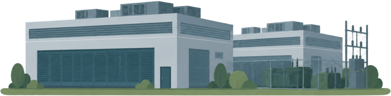

River ecosystem challenge
Ten Data Centres. Two animals. One river. Every choice changes the water.
Play as a beaver or an otter, build a collective campaign, and discover how ecological evidence can move public policy toward clean water, living habitats and a safer planet.

Play & learn
Choose your river advocate
Each animal sees different ecological evidence. Pick one, then decide how communities should organise, lobby and press decision makers for enforceable environmental protection.
River report
Meet the neighbours
Different lives, shared water — and a shared public voice
Understanding an ecosystem is the beginning. Lasting protection also requires people to organise around evidence and make environmental limits impossible for decision makers to ignore.
Beavers change landscapes
By building dams, beavers can slow streams and create ponds and wetlands. These habitats can store water, trap sediment and support many species.
Beaver effects vary by location, but suitable dams can increase habitat complexity and create refuges during drought or high flows.
Otters reveal food-web health
Otters depend on aquatic prey and connected habitat. Healthy fish and invertebrate populations help support healthy otter populations.
Pollution and habitat loss can disrupt prey, shelter and movement. Protecting water quality benefits the wider food web otters rely on.
Wildlife cannot attend a planning hearing
People can connect ecological evidence to public decisions: request records, join consultations, contact elected representatives and regulators, build coalitions and demand measurable safeguards.
Effective advocacy identifies the decision, deadline, evidence and remedy. It remains factual, transparent and persistent, then monitors whether promised protections are actually delivered.
From evidence to power
A healthy river needs an organised public voice
Planning and policy should respect ecological limits, public wellbeing and future generations before the access or influence of trillionaire technology owners. That principle becomes effective when communities translate it into precise, democratic demands.
01Build the evidence
Map water use, energy demand, emissions, habitat, noise and cumulative effects. Use official records, independent expertise and lived local knowledge.
02Build the coalition
Bring residents, environmental groups, scientists, anglers, farmers, schools and affected workers around a short set of shared protections.
03Move the decision
Use consultations, planning observations, meetings, petitions and public representatives to seek enforceable limits—not vague environmental promises.
04Monitor and persist
Track permits, conditions and real-world performance after approval. Publish results, challenge non-compliance and return to the decision maker with evidence.
Digital infrastructure, living landscapes
What happens when a data centre joins the watershed?
Data centres support the online services people use every day, but their ecological footprint is not one simple number. It depends on how electricity is supplied, how cooling works, where a campus is built and how water, heat, noise and habitat are managed.
National grid
Large demand changes the electricity system
Servers and cooling equipment need electricity continuously. The climate effect depends on efficiency, the real-time generation mix and whether demand can move away from periods when the grid is under pressure.
- Measure total energy use as well as efficiency per unit of computing.
- Plan for clean electricity at the hours it is used, not only as an annual average.
- Use flexible demand and storage where they can reduce pressure at peak times.
A local lens
Questions worth asking about any proposal
- WaterWhat source will cooling use, how much is needed in dry weather, and what returns to the catchment?
- HabitatAre rivers, wetlands, hedgerows and wildlife corridors protected before construction begins?
- PowerWho met the decision makers, whose evidence is public, and how will lobbying, conflicts and environmental promises be scrutinised?
Irish context: SEAI reports that data centres accounted for 21.2% of Ireland's electricity demand in 2024. EPA guidance also notes that data centres can require large volumes of cooling water and that water abstraction itself can place pressure on the environment.
Water quality basics
A river is more than water moving downhill
Its health depends on chemistry, temperature, flow, habitat and the organisms living there. Small changes upstream can travel through the whole ecosystem.
Dissolved oxygen
Fish and aquatic invertebrates need oxygen dissolved in the water.
Temperature
Warmer water can hold less oxygen and may stress cold-water species.
Nutrients
Too much nitrogen or phosphorus can drive algal growth and oxygen loss.
Sediment
Excess fine sediment can cloud water and smother habitat used for feeding or spawning.